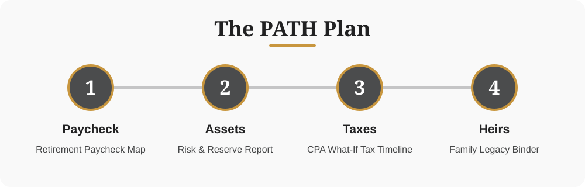

How we work
The PATH Plan
Paycheck, Assets, Taxes, Heirs. Four steps that turn your savings into a retirement paycheck, protect it, and protect your family. Then we walk it again every year.

Paycheck
Social Security timing for both of you, pensions, savings, rentals and part-time work, laid out by source and by year on one page.
You receive: Retirement Paycheck Map
Assets
Your risk score, plus your money sorted by purpose: income for the next few years, growth for later, reserves for long-term care and surprises.
You receive: Risk & Reserve Report
Taxes
Roth conversions, required minimum distributions, Medicare surcharges, restricted stock, and the tax on selling rentals or a business, planned year by year.
You receive: CPA What-If Tax Timeline
Heirs
Living trust, wills, powers of attorney and every beneficiary checked, then stored where your family can find them.
You receive: Family Legacy Binder
What working together looks like
1. PATH Review (60 minutes)
We learn what matters to you, look at all four steps, and you leave with your one-page PATH Map. Bring last year's tax return.
2. Your PATH Plan
We present your Retirement Paycheck Map, Risk & Reserve Report, CPA What-If Tax Timeline and legacy checklist, with clear recommendations and every cost explained.
3. Put it in place
If you move forward, we handle the accounts, applications and documents, and set your tax calendar.
Every year: walk the PATH
Your annual review covers all four steps, with your tax return in hand.
Questions people ask
How long does it take?
Most families go from the PATH Review to a finished plan in two to four weeks [VERIFY].
Do you prepare my taxes too?
If you'd like. Our affiliated firm, Fort Collins Tax Advisory Group, prepares returns, so your tax plan and your return come from the same office.
Get a path to run on.
In a complimentary 60-minute PATH Review, in our Fort Collins office or by Zoom, Greg walks through your Paycheck, Assets, Taxes and Heirs with you.
You'll walk away with: Your one-page PATH Map: where you stand on all four steps and your top three gaps. Bring last year's tax return and our tax team will run a CPA What-If review. It's yours to keep.
Reserve My PATH ReviewGreg holds a limited number of PATH Reviews each month. No cost, no obligation.
Prefer to talk? Call (970) 204-1500